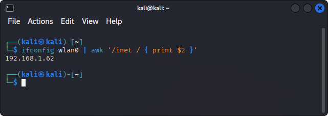
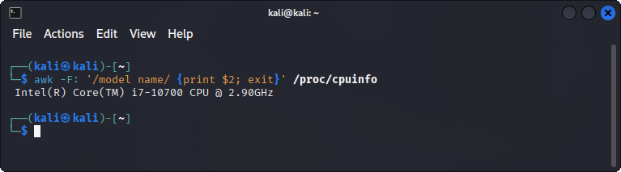
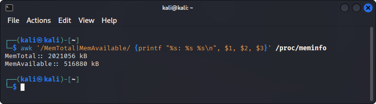
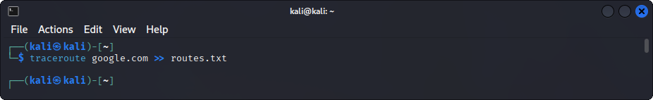
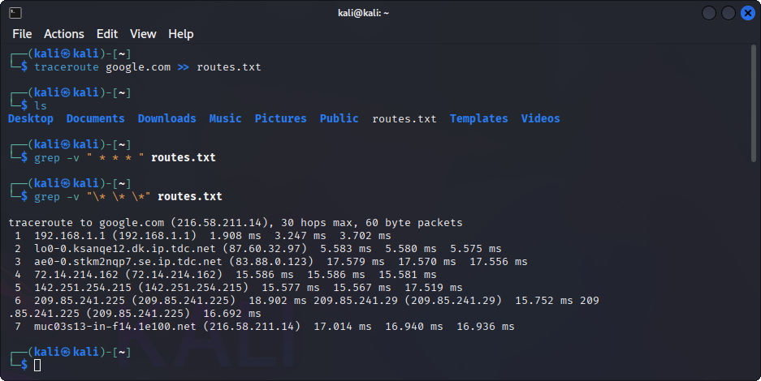

Linux : Working with Command Output and Text Manipulation
| Linux |
Background
In this practical exercise, I’ll focus on interpreting and manipulating text output from common Linux commands.
Requirements:
1. Find the IP address of the eth0 interface
Run the ifconfig command. It displays details about network interfaces.
Search for the paragraph corresponding to the eth0 interface and extract its IP address.
Task:
Using what you've learned so far, write a one-liner that displays only the IP address of the eth0 interface.
Hint: Use grep, cut, tr, or similar tools.
Note: I have used the wlan0 interface , as my eth0 interface is not active and I have no possibility to access a router via cable.


one liner command to display ip addr
2. Display only the processor name
Show the contents of the /proc/cpuinfo file.
Then, extract only the processor name using a one-liner.
Task:
Write a command that displays the CPU model name in one line.


3. Show total and available memory
Using the /proc/meminfo file, write a one-liner that prints:
- The total installed memory
- The currently available memory
Task:
Write a one-liner to extract and show both values.


4. Save a traceroute to a file
The command traceroute google.com prints the route taken to reach Google’s servers.
Task:
Save this route information to a file named routes.txt.
Hint: Use I/O redirection (>) to save output.


5. Display cleaned route output
Display the contents of routes.txt but ignore any lines containing * * *.
Task:
Write a one-liner to show only the valid hops, filtering out the unreachable ones.


In this exercise, I learned and practiced how to extract and manipulate specific pieces of information from command-line outputs using powerful text-processing tools like grepand awk I practiced retrieving network and system information, such as IP addresses, CPU model, and memory stats, and learned how to redirect and filter command output effectively. These skills are essential for working efficiently in a Linux environment and automating system monitoring tasks.